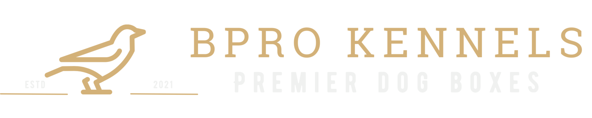

Episode 50 · May 01, 2026 · 5776
Ben Proctor & BPRO Kennels

About This Episode
In this episode, I sit down with Ben Proctor, owner of BPRO Kennels, to talk dogs, training, and what actually makes a kennel hold up in the real world. If you care about keeping your dog safe—and want a crate that’s as solid as it looks—you’ll want to hear this. Ben brings real experience, strong opinions, and a level of detail most people overlook. This is one worth listening to. Have a great weekend! Introduce your dogs to guns and start them out right or help fix your gunshy dog using, "THE GUNSHY FIX" at
Questions about the training topics in this episode? Tyce works with bird dog owners and hunters through Utah Bird Dog Training. Reach out to work with him directly.
Resources & Links
- The Gunshy Fix — Sound conditioning program for gunshy dogs.
- Kuranda Dog Beds — Elevated, chew-proof dog beds.
- BPRO Kennels — Custom kennel builds for hunting dogs.
- Utah Bird Dog Training — Tyce's professional training services.
Transcript
Full transcript for Episode 50: Ben Proctor & BPRO Kennels.
Tyce
Hey folks, welcome to the Bird Dog Podcast. In this episode I sit down with my good friend Ben Proctor from BPRO Kennels. Ben builds phenomenal high-end custom dog boxes — the kind that make people stop you at a gas station and ask where you got it. I've got one on my rig and it's absolutely built. We talk about his business, his background in dogs, and the hunting that drives all of it. Hope you enjoy the conversation.
Tyce
Ben, good to have you. We actually go way back — we both worked at a car dealership together years ago, you detailing and me selling. Neither of us could have guessed we'd both end up making our living in the dog world. Give everyone a little bit of background on yourself and how you got into hunting and dogs.
Ben
Yeah, it's kind of a funny origin story. My grandpa was a government trapper down in southern Utah — he trapped mountain lions, shot deer, loaded horses every day. That was just his job. So for my dad's generation, hunting was the last thing they wanted to do for fun. We went camping, we did the national parks, we were outdoors all the time — but we didn't hunt. It was never frowned upon, we just did something different.
The shift came when I was about eleven. My best friend's family — the Cleggs — were full-on hunting people. Their basement was a museum of mule deer and elk and turkeys. One fall Saturday I woke up at their house, had no clue what was happening, and next thing I know I'm in jeans and tennis shoes in the back of a truck heading out pheasant hunting. I had zero idea what I was doing, but it was the most fun I'd ever had. That planted the seed.
Tyce
Tell us about your first bird. Everyone's got that story locked in.
Ben
Yeah, this one's a little embarrassing. We're at the same church farm — the one your old boss Rand had access to — and a bird gets up. Cameron's yelling something that I'm pretty sure was "don't shoot," and I just smoke it. It's a hen. I was maybe eleven or twelve, didn't know the difference yet. Cameron's dad comes over, gives me a hard time, laughs about it. But honestly, when you're that age and you point a twelve gauge and actually connect on something — you don't care what it was. That was seared in my memory. The cattails, the bird going up, running over to find it. Super fun.
Tyce
So when did you finally get your own bird dog?
Ben
Years later, once I was older and getting into hunting more seriously. I honestly didn't know there were different levels of bird dog. I thought a bird dog was a bird dog — you get one and it finds birds. We drove up a canyon, paid four hundred bucks for a German Shorthair named Otto, did some basic obedience at home, took him to a game farm, and he pointed wild by himself. I was absolutely hooked.
Pretty quickly though, I realized I didn't have the temperament or the knowledge to get the most out of him. I wasn't going to do him justice trying to figure it out on my own. The way I think of it — and I'm a fabricator, so everything's a metal analogy for me — a trainer puts the initial bevel on the ax. I can keep it sharp after that. But to get that clean edge in the first place, you go to the right person. So I called Tyce.
Tyce
Otto — how's he doing these days?
Ben
He's eleven or twelve now. Still looks pretty good. Vet found some heart failure about a year or two ago, told us to throttle him back a little bit and keep an eye on him. I decided against the medication — if he goes out on a hunt doing what he loves, that's not a bad way. He's been great the last two years. We just got a third dog to take some of the workload off him so he can enjoy the good years.
Tyce
And you've got Scout too — the female GSP you kind of inherited.
Ben
Yeah, a buddy of mine got her as a pup at the same time he got a Bernese Mountain Dog. About six months in he calls me: "This Shorthair is on crack. I can't wear her out." Just completely standard Shorthair behavior — but he couldn't handle both at that stage. So I took her. She turned into one of the best hunting dogs I've ever seen. She's small and methodical. When she goes on point she is a statue — you can tap her on the head and she will not release until she's satisfied you've checked every inch of that cover. And she's an absolute favorite when you take buddies that have never hunted before, because she does not make mistakes.
Tyce
You also picked up a Wirehaired Vizsla this year, right? Tell us about that one.
Ben
Her name's Hoot, and that happened through a pretty cool trade. Her breeder, Ben Frets up at North Country Sporting Dogs in Canada, reached out on social media wanting one of my dog boxes. I told him I'd trade him a box for a pup. Done. He's doing something really interesting — the Wirehaired Vizsla as a breed has kind of gone the show dog direction over the years, losing some of its hunting drive. He's importing dogs from Hungary, Czech Republic, all over, specifically to put that drive back in. Breeding them together to build his own line. People give him some flack for it, but he doesn't care — he just wants the breed to be a great hunting dog again.
This was her first real hunting season after training. She's doing great on wild birds, picking up the scent game well. She's a closer-working dog — sticks to maybe eighty to a hundred yards where my Shorthairs want to run two hundred. It's an adjustment mentally after years of running big-running dogs, but honestly I'm just trying to let her go and not overcue her. Ben says it takes them a couple years to fully mature and open up, and I believe it. She's got a great point, great retrieve, very soft mouth and eager to please. She's going to be a really fun dog once she fully finds her confidence.
Tyce
Let's get into BPRO Kennels. How did that start?
Ben
I've been welding for fifteen-plus years — I had my own shop doing everything from structural steel to stainless handrail to aluminum cabinets. When I started getting my own bird dogs I'd see those diamond plate aluminum dog boxes on trucks — the Owens-style boxes — and as a fabricator I'd look at them and think, I could build something better. So I built one for myself. It was rushed, kind of rough, but it taught me what I'd want to do differently on the next one.
The real version I built over the following year got a lot of attention from clients when I was guiding. "Where'd you get that? I built it — that's what I do." I figured it would be a good way to generate welding shop leads from the hunting crowd. Then I heard about a Pheasants Forever trade show in Omaha, called the organizer three weeks before the show, and there happened to be one booth left. I scrambled to build a box, got it powder coated, drove to Nebraska with zero branding and zero marketing. A lot of people thought we were a barbecue company. But the people who were actually into bird dogs saw it and said, "This is different. This is cool." That snowballed. Next year we built fifteen. Year after that, forty. Now that's all we do.
Tyce
Walk us through what makes your boxes different from a standard aluminum dog box.
Ben
We start with a roll cage — literally like a roll cage — made from one-inch heavy wall aluminum tubing. The big three-hole box, the Havoc, has over a hundred feet of tubing in it. Everything is hand TIG welded. That structural frame is what makes them genuinely safe in a crash or rollover. The typical folded aluminum boxes on the market have no real frame — they're not going to protect your dog in a serious accident.
Because of the double-wall construction — an outer wall and an inner wall — we can stuff one inch of real construction-grade insulation between them. Most competitors are using quarter-inch plastic and calling it insulation. By the time outside heat works through that inch of insulation it's largely dissipated. We're also all aluminum, not stainless steel, so the boxes weigh significantly less — stainless is roughly three times the weight. And then we powder coat everything in whatever color or custom finish you want. The WWII plane aesthetic and the rivet lines in the design are something I've always loved — all the model names come from old aircraft.
Tyce
What are the three models and what fits what?
Ben
The Havoc is the three-hole. It's 58 inches wide so it has to sit above the wheel wells in a full-size truck — most guys run it on a drawer platform or a roll deck. The Dauntless is a two-hole that fits between the wheel wells of a full-size truck. The Warden is the smallest two-hole and fits mid-size trucks like a Tacoma or Colorado. All of them are 34 inches deep — deep enough that a dog can lay out straight with a flat spine on a long trip but tight enough that they feel secure. I've had an 80-pound Shorthair fit in the Warden with no problems. All models are designed around standard-sized hunting breeds.
Lead time right now is about three to four months, and everything is paid in full upfront. We learned the hard way on the deposit model — powder coating a box canary yellow and then having someone back out means we own a canary yellow dog box. Full payment up front keeps everything clean. You can find us on Instagram at @bprokennels, Facebook, or email ben@bprokennels.com. My personal cell is on all the socials — text or call if you have questions.
Tyce
Ben's boxes are the real deal. I've got one on my truck and it's absolutely solid — the thing is a tank. If you're in the market for a custom dog box that will get you compliments every time you pull into a hunt, go check out BPRO Kennels. Ben's a great guy and he builds something genuinely special. Thanks for coming on today, Ben.
Ben
Appreciate it. Fun to be here.
About the Host
Tyce Erickson
Tyce Erickson is a professional bird dog trainer and the owner of Utah Bird Dog Training in Utah. For nearly two decades he has worked with pointing dogs, retrievers, and family hunting dogs — helping owners build dogs that are capable and enjoyable in the field. The Bird Dog Podcast is an extension of that work: honest conversations on training, hunting, breeding, and everything that goes into a life spent working dogs.
More About Tyce